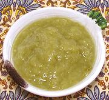

|
Sour Plum ExtractTurkey - Erik (Korugu) Eksisi | ||||
| Makes: Effort: Sched: DoAhead: |
3/4 cup ** 3 hrs Yes |
This Turkish souring ingredient is used in soups, dolma, etc. This extract is easy to make and has good keeping properties in the fridge. | |||
|
|
2 1 ar ar |
# t |
Sour Plums (1) Salt Water Olive Oil |
Make - (3 hrs - 20 min work)
|